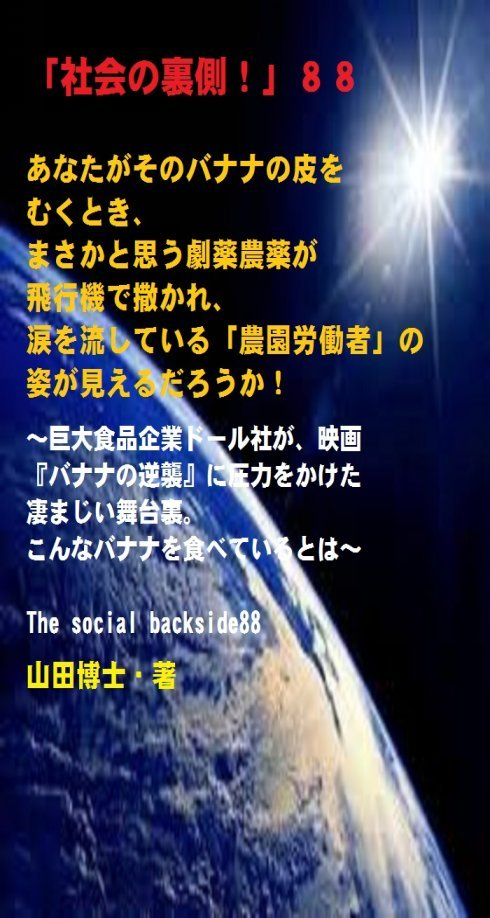

| 「社会の裏側！」８８......あなたがそのバナナの皮をむくとき、まさかと思う劇薬農薬が飛行機で撒かれ、涙を流している「農園労働者」の姿が見えるだろうか！: 巨大食品企業ドール社が、映画『バナナの逆襲』に圧力をかけた凄まじい舞台裏。こんなバナナを食べているとは | |
| 山田博士 | |
| kominitesyuppankai (2018) | |

■「社会の裏側！」８８
あなたがそのバナナの皮をむくとき、まさかと思う劇薬農薬が飛行機で撒かれ、涙を流している「農園労働者」の姿が見えるだろうか！
～巨大食品企業ドール社が、映画『バナナの逆襲』に圧力をかけた凄まじい舞台裏。こんなバナナを食べているとは～
The social backside88
山田博士・著
★本書の著作権について
皆さんにはまったく関係ないことだと思いますが、複写、転送、抜粋、転載など、著作権侵害にあたる行為は絶対になさらないで下さい。本書の著作権は、山田博士にあります。今後、皆さんのお役に立ちたい活動が出来なくなりますので、その点、ぜひよろしくお願いします。ささささ、それでは、本書をどうぞ、ごゆっくりご覧下さい。
★概要
本書は、１本の「ドキュメンタリー映画」からスタートします。
ぼくがこの内容を知ったときの、驚いた顔を、どうぞご想像下さい。
それでなくても、ふだん、世界の出来事の数々に驚いてばかりいるぼくの顔が、さらに大きく歪（ゆが）んでしまいました。
その映画の予告編の中で、バナナ農園の上空から飛行機が、農薬をザザザ～ッと撒（ま）いている光景を見ることができます。
本書の中に、その映画の「予告編」を見ていただけるよう、そのリンクを貼っておきました。
あなたも、どうぞご覧下さい。
いやあ、この光景を見ると、凄（すご）い。
目の前で見ると、もっと凄い。
これが、ただの水ならいいのです(笑)。
いつも涼しくさせてくれて、ありがとう、で、すみます。
でも......。
そう、その液体が、アメリカでも日本でも「精子を破壊する」ということで使用が禁止された「劇薬農薬」だった、と言うのですから、もう何をか言わんや......。
このドキュメンタリー映画『バナナの逆襲』は、そういう農園で働く農民たちが、農園を運営するアメリカの巨大食品会社のドール・フード社を相手どって訴訟を起こして勝訴した裁判が主たる内容なんです。
このドール・フード社は、中米のニカラグアに広大なバナナ農園を持っております。
そして、現地の安い労働力のもと、莫大（ばくだい）な利益を上げているわけですね。
でも、同社は、バナナの栽培に、きわめて有害でアメリカなどではとっくに禁止された劇薬の農薬を「平気で」使用してきました。
そして農園で働くそこの農民（労働者）たちにガン発症をさせたり、無精子症による「子どもが作れない体」にさせたりしていたわけですね。
なにしろ、その農園では、水に溶かした劇薬農薬を、飛行機を使って空から大量に散布している......。
そして、その飛行機の下の大地では、労働者たちが裸足（はだし）で働いている。
その農薬を頭からかぶっているわけですが、それは同時に、そのバナナを食べる消費者に対しての健康をも害します。
こういう現状をそのままにして、知らんぷりのドール・フード社。
そして、そういう事実をまったく知らず、そういうバナナを眼を細めながら、ほおばっている消費者たち。
いやあ、ぼくなど、まったく信じられません。
この農園は、まるで、昔の奴隷農場じゃありませんか。
こういう現実が、いまの社会で平然と行われていることに、ぼくは改めて驚きとともに大きな怒りを覚えます。
ささささ、どうぞ、皆さんも、ごいっしょにお手を。
そして、本書を注意深くご覧下さい。
★目次
★（第１章）
なにしろ、その農園では、水に溶かした劇薬農薬を、飛行機を使って空から大量に散布している......。その飛行機の下の大地では、労働者たちが裸足（はだし）で働いている。そして、その農薬を頭からかぶっているわけです（もちろんそれを食べる消費者も）......
★（第２章）
「内容が極めて不正確で中傷的」であり、上映すれば「告訴する」との文書が、映画祭の主催者側と監督に送られるわけですね。ぼくたちの想像を超える過激な「妨害」工作。そして、そこから見えてくるアメリカメディアの暗部......
★（第３章）
この第２話は、ニカラグアのバナナ農園の労働者が、使用禁止農薬の使用による農薬被害の賠償を求めて、ドール・フード社を訴えた裁判でのやり取りを軸にして描いた作品です......
★（第４章）
その結果、さすがのアメリカの政府機関も動きだし、緊急調査を行いました。そして、多くの作業者たちの精子数の減少、あるいは精子がないことが判明した......というわけです。いやあ、こんなものが、農園の頭上から飛行機で撒かれている......
★（第５章）
「ネットの浸透、紙メディアの衰退で、ジャーナリストは常に失職を恐れています。でも不安や恐れにばかりとらわれていては、良い仕事はできません。独立した、自由に物を書けるジャーナリストのいない社会に、本当の意味での民主主義は育ちません」......
★「社会の裏側！」シリーズの既刊本案内
★プロフィール
（最初に、恥ずかしながら、ぼくの紹介を簡単に述べておきます）
やまだ・ひろし。
１９４７年、福井県小浜（おばま）市生まれ。
食生態学者。元大学名誉教授。日本危機管理学会会員。
山田博士いのち研究所主宰。
ベトナム戦争の終わったちょうどその年１９７５年に、マンガストーリィと商品の実名で食べものや環境を取り上げた小冊子「暮しの赤信号」を発行する。実名で取り上げたため、社会に衝撃を与えた。各号１０万部単位で読まれ、隠れたベストセラーなどと、新聞などで何度も報道される。
同じ年、偶然にも有吉佐和子さんの「複合汚染」が発表され、この小冊子はその動きも受けて多くの学校の副読本としても活用された。
文化放送の「なっちゃこワイド」や、ＮＨＫ海外放送「ある日本人」でお話しをしたり、ギター弾き語り公演や、各自治体や学校などへの講演なども続けている。
現在は、メルマガ「暮しの赤信号」（「短縮版」と「完全版」の２種）を発行し、企業名や商品名なども公表して、世界中のかたに喜ばれている。
その読者層は、医師や看護師、栄養士、教師、会社経営者、自治体など、国の内外を問わず、多くの読者たちから毎日のように便りが届いている。年齢層も、１０代からかなりの高齢のかたまで、さまざまだ。
このメルマガは、まぐまぐ！を始め３つのスタンドの合計で、７千部発行しているが、もしご関心のあるかたは、ご覧いただくと嬉しい。毎日、早朝５時に届けられる（日曜は除く）。その時刻を楽しみにされている読者も多いとか。
先述したように、メルマガ「暮しの赤信号」には２種類あり、「短縮版」のほうは無料。「完全版」のほうは、山田の思いが１００％掲載されており、社会を見るのに、毎回大いに参考になるだろう。そのほかにもさまざまな特典がある。「短縮版」については、次のアドレスで登録できる（「完全版」は、「短縮版」の中に案内あり）。
■「短縮版」登録（無料）→ http://goo.gl/AFx95J
また、毎月第３土曜日に、東京の恵比寿でお茶飲み会「博々亭（ひろびろてい）」を開催。遠路から毎回読者が駆けつけている。参加条件はメルマガ読者に限定。参加費用は無料だ（８月と１２月はお休み）。
著書に 『脱コンビニ食！』（平凡社新書）
『危険な食品』（宝島社新書）
『その食品はホンモノですか？』（三才ブックス）
『ひとり月１万円食費で幸せ生活』（ＷＡＶＥ出版）
『最新 危ないコンビニ食』（現代書館）
『あぶないコンビニ食』（三一新書）
『続 あぶないコンビニ食』（同）
『外食店健康度ランキング』（同）
『山田博士の暮しの赤信号』第１巻～第５巻（亜紀書房）
『暮しの赤信号』小冊子＆ＣＤ－ＲＯＭ版全２３巻
『月１万少々の食費で、ザクザクと健康を稼ぐぼくの
方法』
『いのち運転"即実践"マニュアル』各話
『社会の裏側！』各巻（これは、アマゾン発行の電子書
籍。ＰＤＦ版でも読める）
『セーラー服と警察犬』（小説）各巻
『実話・食卓の事件簿』各巻......などがある。
山田のホームページ http://yamadainochi.com/
★はじめに......
こんにちは。
山田博士（やまだ・ひろし）です。
本書をご覧いただき、嬉しく思っております。
この内容をご覧いただくことで、少しでもあなたが「社会の裏側！」の流れにお気づきになり、そしてたとえ１ミリでもいい、即、行動されることを願っております。
ただ読むだけでは、誰でもできます。
それでは、あなたの身の回りの状況は石のように動きません。
本書をご覧になって、これは......と思うことがあれば、即行動なさって下さい。
お願いします。
その小さな行動の積み重ねこそが、あなたの明日を、１２色のバラ色で輝かせることになると信じております。
なお、この「社会の裏側！」は、今後もシリーズとして発刊して行くつもりです。
もしご関心があれば、「社会の裏側！」という名前で、アマゾンで検索してお調べ下さい。
さまざまな問題の社会の裏側！を詳しく、しかも楽しく述べております。
ぼくの名前で検索されても、見つかるのではないかと思います。
もし、「ＰＤＦ版」でご希望の場合は、ぼくの事務局まで遠慮なくお問い合わせ下さい。事務局→ http://goo.gl/t12Yx
ささささ、能書きはそこまでにします。
どうぞ、笑顔で、頁をお繰（く）り下さい。
お楽しみに！ （山田博士）
★（第１章）
なにしろ、その農園では、水に溶かした劇薬農薬を、飛行機を使って空から大量に散布している......。その飛行機の下の大地では、労働者たちが裸足（はだし）で働いている。そして、その農薬を頭からかぶっているわけです（もちろんそれを食べる消費者も）......
もう、いつものように、つべこべは言いません！（笑）。
まずは、下記の映画の予告編を、ちょこっと、見てもらいやしょう。わずか２分ほど。
下記をどうぞクリックしてみて下さい（当初の音量には注意して下さい。すぐに音が飛び出します）。
ドキュメンタリー映画『バナナの逆襲』 予告編
→ https://www.youtube.com/watch?v=RchNz-uw3ik
（２０１６年に公開されたものですので、すでに削除されて
いる場合は、お許し下さい）
その予告編の中に、バナナ農園の上空から飛行機が、農薬をザザザ～ッと撒（ま）いている画面が現れますよね。
いやあ、実際に見ると凄（すご）い。
これが、ただの水ならいいのです(笑)。
いつも涼しくさせてくれて、ありがとう、で、すみます。
でも......。
そう、その液体が、アメリカでも日本でも「精子を破壊する」ということで使用が禁止された「劇薬農薬」だった、と言うのですから、もう何をか言わんや......。
このドキュメンタリー映画の『バナナの逆襲』は、そういう農園で働く農民たちが、農園を運営するアメリカの巨大食品会社のドール・フード社を相手どって訴訟を起こして勝訴した裁判が主たる内容なんです。
このドール・フード社は、中米のニカラグアに広大なバナナ農園を持っております。
そして、現地の安い労働力のもと、莫大（ばくだい）な利益を上げているわけですね。
でも、同社は、バナナの栽培に、きわめて有害でアメリカなどではとっくに禁止された劇薬の農薬を「平気で」使用してきました。
そして農園で働くそこの農民（労働者）たちにガン発症をさせたり、無精子症による「子どもが作れない体」にさせたりしていたわけですね。
なにしろ、その農園では、水に溶かした劇薬農薬を、飛行機を使って空から大量に散布している......。
その飛行機の下の大地では、労働者たちが裸足（はだし）で働いている。
そして、その農薬を頭からかぶっているわけです（もちろんそれを食べる消費者も......）。
こういう現状をそのままにして、知らんぷりのドール・フード社。
いやあ、ぼくなど、まったく信じられません。
まるで、昔の奴隷農場じゃありませんか。
しかも、このドール・フード社。
映画『バナナの逆襲』を上映しようとしたら、これを制作した映画監督のフレドリック・ゲルテンさんを訴えるという暴挙に出ました。
なんとしても、この映画は上映させたくない。
お金にモノを言わせて、同社はアメリカ中のマスコミに圧力を加えたんですね。
それに対して、この監督のフレドリック・ゲルテンさんは、最後まで闘うことを決心します。
だけど、このドール・フード社の「汚（きたな）いやりかた」にはぼくも驚きました。
なるほど、この会社、そこまでやるのか......とね。
つまり......。
★（第２章）
「内容が極めて不正確で中傷的」であり、上映すれば「告訴する」との文書が、映画祭の主催者側と監督に送られるわけですね。ぼくたちの想像を超える過激な「妨害」工作。そして、そこから見えてくるアメリカメディアの暗部......
この映画『バナナの逆襲』は、２本立てになっています。
第１話は、この監督が同社から、上映寸前に訴えられた顛末（てんまつ）を記録したもの。
第２話は、このバナナ農園の労働者が同社を相手に起こした内容の記録。
実際の制作の順番は、第２話が最初なんですが、そのときにドール・フード社から上映禁止の動きあり、それの顛末を今度は第１話として制作したというわけです。
そのため、あとにできた第１話から最初に観（み）たほうが、よく分かるようですね。
この第１話を観ると、このドール・フード社が、第２話の上映をなんとかして止めさせようと必死だった意味が、よく見えます。
まず第１話から見てみましょうか。
第１話の日本での邦題（ほうだい）は......『ゲルテン監督、訴えられる』。
この第１話は、先述したように、ドール・フード社が監督を訴える内容なんですね。
そう、第２話の上映直前に、●●がこれを映画祭で上映させまいと、監督を訴えるわけです（●●は下記の設問を）。
ぼくたちの想像を超える過激な「妨害」工作。
そして、そこから見えてくるアメリカメディアの暗部。
はたして、このような事態で、この映画は無事に上映されるのか。そういうところが見ものでしょうね。
しかし、２１世紀のいま、このような前時代的な動きが、こうした巨大企業の中で起こっているとは......。
驚きました......(笑)。
あ、笑ってなどとてもできない内容なんですが、笑えるというより、そうですね......呆（あき）れてしまう......と言ったほうがいいのかも。
これほどの巨大企業が、こんな呆れることを平気でしている......。
ぼくたちの国もまったくそうなのでしょう。
いかに大きな企業であっても、一皮めくってみれば、いまの資本主義社会では、程度の差こそあれ、みんな同じ。
いかに、ふだん澄ました顔をしていても、いかに、素敵なＣＭを流していようとも......。
それらがじつによく分かる映画だなあと、ぼくは思っています。
この第１話は、映画祭のコンペ（競技）で上映されるはずだった作品が、ドール・フード社の要請でコンペから外される場面から始まります。
この作品とは第２話のことで、バナナ農園の労働者が同社を相手どった裁判の顛末。
「内容が極めて不正確で中傷的」であり、上映すれば「告訴する」との文書が、映画祭の主催者側と監督に送られるわけですね。
これらについては、先述した「予告編」を、ご覧下さい。
同社から、この文書を受け取ったフレドリック・ゲルテンさんの表情などがよく分かると思います。
だけど、同社が言うように、「内容が極めて不正確で中傷的」でなかった証拠に、バナナ農民の裁判はロサンゼルスの法廷で審理され、ヒスパニック系弁護士の活躍もあって、原告１２人中６人の被害については「（企業側に）責任あり」......との評決が一度は出たわけです(笑)。
だがドール社側は、これをすぐに上訴したうえ、「（原告の弁護団が）虚偽（きょぎ）の証言を集めた」という訴えを逆に起こして評決は無効にされたんですね。
このゲルテンさんによりますと、その後、この争いはまだ決着していないと言います。
まあ、同社も必死なのでしょう。
もし、自社にとって「不都合な真実」が明かになれば、即売り上げに響きます。
いや、同社の死活問題になるかもしれません。
そのため、多くのお金を使って、マスメディアや学者たちを動員して動いているわけですね。
なにしろ、このフレドリック・ゲルテンさん側と違って、企業側には贅沢な資金がありますから。
そういう背後があるためか、アメリカメディアの多くは、ゲルテンさんに厳（きび）しいわけです。
そして、彼らの非難の矢面（やおもて）に立たされる。
彼らメディアの大半は、ドール社やそのＰＲ会社だけに取材して、この問題を報道するわけですね、
いわく。
「貧しいキューバ人移民の悪徳弁護士が、バナナ農民を原告に立ててアメリカの企業を脅迫している」
「世間知らずのスウェーデン人（フレドリック・ゲルテンさんのこと）が、弁護士を英雄に仕立て上げた」
などなど......です。
そして、映画作品も見てもらえず、ウソつき呼ばわりまでされ、かなりのストレスを感じた......と、彼は言います。
でも彼は、逆に、ドール・フード社を訴えるわけですね。
この名誉毀損訴訟（めいよきそんそしょう）の中で、ゲルテンさんは「じつに多くのことを学んだ」と。
これは、ぼくたちにも大いに役立ちます。
皆さんが、これからの社会の中で、いくら真っ当な行為をしていても、企業や悪徳人物などから訴訟を受けることもあるでしょう。
でも、その場合でも、負けてはいけない。
そのときに、このフレドリック・ゲルテンさんがおっしゃっていることが、きっと役立つと思っています。
彼いわく。
「（企業側は、こちらの）取材が甘く、プロとしての力量のない存在......のように見せる物語を作るのです」
「作り手の未熟さを笑うという古典的な戦略ですが、私のケースでも多くの米メディアがひっかかりました。米国の報道陣には、大多数とは違う視点で物事を報じるエネルギーや好奇心が薄いという印象を受けましたね」（出所：「毎日新聞」２０１６年２月２９日、東京版夕刊）。
ところが、フレドリック・ゲルテンさんの母国であるスウェーデンのブロガーたちの尽力（じんりょく）で、「この作品を発表できないのはおかしい」との声がスウェーデン国内で高まりました。
そして、請願（せいがん）の動きも広がり、２００９年の後半には、なんと、スウェーデン国会議員らが「民間がダメなら国会で」と、議事堂で初めて上映してくれたわけです。
やはり、真っ当な事実とは、凄いものですね。
それが話題となって、欧州各国のテレビでも放映されたのですが、それを見てか、ドール・フード社はその翌２０１０年、フレドリック・ゲルテンさんへの訴えを取り下げました。
勝ち目がないということでしょうか(笑)。
でも、アメリカの映画館や放送局では、なかなか上映するまでには至っていないようです（アメリカ国内での同社の圧力でしょうね）。
アメリカの「言論の自由」の実態がよく分かります。
きっと、企業だけにとっては「自由」なのでしょうね。
さて、肝腎（かんじん）のこの映画『バナナの逆襲』の第２話がどうなっているのかと言いますと......。
お待たせしました、それは......。
★（第３章）
この第２話は、ニカラグアのバナナ農園の労働者が、使用禁止農薬の使用による農薬被害の賠償を求めて、ドール・フード社を訴えた裁判でのやり取りを軸にして描いた作品です......
第２話の日本での邦題は......『敏腕？弁護士ドミンゲス、現る』。
これは、２００９年に制作されたものですが、中米のニカラグアのバナナ農園労働者の農薬被害を描いたドキュメンタリーなんですね。
中米のコスタリカや、ホンジュラス、それにニカラグアなどでバナナ農園を展開する多国籍企業のドール・フード社は、アメリカで１９９７年に健康被害（生殖障害）をもたらすとして使用禁止になった「劇薬農薬」のＤＢＣＰ（後述）を使い続けました。
そのため、この被害を受けたバナナ農園の労働者１２名が、ドール・フード社に、損害賠償を求めてアメリカ国内で裁判を起こします。
ただ、この裁判は、外国の原告がアメリカで、しかもアメリカ企業の責任を問えるのかどうかが争われた裁判でもありました。
このバナナ農園の労働者の提訴には、被害を知ったアメリカの「敏腕」弁護士による、ニカラグア現地での原告掘り起こしが背景にあったのですね。
つまり、キューバからの移民でもあったドミンゲス弁護士という人が、弱者の側に立つことを公言して、敗訴では費用を取らないというほどの熱の入れようでした。
いやあ、世の中には、立派な人がいるものです。
そして、この第２話は、このドミンゲス弁護士を軸（じく）に展開して行きます。
この映画の中の、「本当は、子どもを４人欲しいと思っていた......」と語る一人の男性労働者の証言シーン。
実際は一人もできないのですが、これは、観ていても悲しくなります。
彼は、思わずその場で絶句し、証言台に突っ伏して嗚咽（おえつ）するわけですね。
ドール・フード社は、みずからこの危険性を知りながら、この劇薬農薬ＤＢＣＰを空中散布し、そのために、無精子症となった彼。
そのため、彼は４人どころか、自分の子どもをその手に抱くことが、とうとうできませんでした。
今後も一生、できないでしょう。
ところで、この農薬ＤＢＣＰを製造していたダウ・ケミカル（アメリカ合衆国ミシガン州ミッドランドに本拠を置く、世界最大級の化学メーカー）が、健康被害を理由に、これの製造中止と回収を明らかにしました。
だけど、この数日後、ドール・フード社は、契約履行（けいやくりこう）を同社に迫り、同社にあったＤＢＣＰの在庫１９０万リットルを、すべて引き取ると言い出したわけですね。
このドール・フード社。
まるで「死の商人」そのものじゃありませんか。
きっと、さすがのダウ・ケミカルも、驚いたことでしょう。
まあ、いずれにしても、そのような被告（同社）に不利な証拠もあって、原告６名への損害賠償と、ドール・フード社への懲罰（ちょうばつ）的賠償の判決を勝ち取ることになったわけです。
まさしく邦題のとおり、このドミンゲス弁護士の「敏腕」の結果でした。
しかし、禁止されている劇薬農薬を「すべて引き取る」、つまり、「すべて使い切る」......と、平然と話す巨大企業が、この世に存在すること自体に、驚きます。
まあ、アメリカの企業たちの行動を見ていれば、そんなことでとても驚くわけにはいきませんが......(笑)。
ところで、先述した、この農薬「ＤＢＣＰ」とは、いったい何ぞや。
ちょっと、述べておきましょうか。
う～むむむ。
こんなものをバナナ農園で、「飛行機から空中散布する」とは、ね。
★（第４章）
その結果、さすがのアメリカの政府機関も動きだし、緊急調査を行いました。そして、多くの作業者たちの精子数の減少、あるいは精子がないことが判明した......というわけです。いやあ、こんなものが、農園の頭上から飛行機で撒かれている......
先述しましたように、この映画『バナナの逆襲』の第２話では、原告側がバナナの木の根に住む害虫駆除に使用されたダウ・ケミカル製の農薬（ＤＢＣＰ）により、生殖能力が失われたとして両社に損害賠償を求めましたよね。
アメリカ国内で、ＤＢＣＰに関する裁判が行われたのは初めてです。
このときの公判での証言によりますと、このダウ・ケミカルは、１９７０年代の後半、人体への悪影響を懸念しＤＢＣＰのアメリカ国内での製造を停止しております。
だけど、ドール・フード社はこのダウ・ケミカルに対して、国外の農場向けにはＤＢＣＰの供給を続けるよう要求しました。
つまり、アメリカ以外の農地では使いたいと......。
そして、それに応じない場合は「契約不履行とみなす」と迫ったと言うわけですね。
う～むむむ。
一番のワルは、どうも、ドール・フード社のようですなあ(笑)。
このＤＢＣＰ。
これは、「ジブロモクロロプロパン」と言いますが（舌を噛まないように）パイナップルやバナナ、その他の熱帯果実にダメージを与える線形動物（虫）に使用される駆除（くじょ）剤なんです。
１９５５年に、すでにアメリカの農業に導入され、１９６４年には燻蒸剤（くんじょうざい）として承認されました。
ところが、１９６２年までには、研究室での実験で、げっ歯類（ネズミやリスなど）の睾丸（こうがん）を小さくして、精子の数と質を著（いちじる）しく低下させることが分かったわけですね。
だけど、農薬の効果が強いためか、それらにもかかわらず、この成分は広く市場に出されたのです。
そして１９７７年。
このＤＢＣＰの製造工場の作業者たちが、自分が父親になることができなくなるのではないかと懸念し始めたわけです。
その結果、さすがのアメリカの政府機関も動きだし、緊急調査を行いました。
そして、多くの作業者たちの精子数の減少、あるいは精子がないことが判明した......というわけです。
いやあ、こんなものが、農園の頭上から飛行機で撒かれている。
だけど、アメリカ国内の工場では管理が改善されたようですが、ラテンアメリカやフィリピン、あるいはいくつかのアフリカ諸国などへは出荷され、現在まで、じつに多くの量が散布されたというわけ。
まさに、隠された事実......でした。
こうした結果を見れば、いつもぼくが叫んでいる「環ホル」（環境ホルモン）作用も十分、あるわけですね。
つまり、生殖系および発達系の障害の発生増加について、大きな役割を果たしているわけです。
内分泌（ないぶんぴつ）かく乱化学物質について、懸念材料が、また一つ増えたようです。
先述したように、この映画の中で「本当は、子どもを４人欲しいと思っていた......」と語る一人の男性労働者の証言シーンが、再び浮かんできます。
彼は、一生、自分の子どもを抱くことができない。
「環ホル」など、生殖系物質の怖さが......ここにあります。
しかも、いま進んでいるＴＰＰ（環太平洋経済連携協定）が動き出すことになれば、食糧を外国から大量に輸入しているニッポンも、同様のことになります。
けっしてニカラグアの農民たちだけの問題じゃない。
そして、「子どもができない......」事件が少しずつ広がって行くかもしれません。
だって、バナナやパイナップル、あなたもお好きなのじゃありませんか(笑)。
そういう意味でも、ニカラグアの農民たちといっしょに手を取り合って、巨大食品企業たちに向かい合う必要があります。
彼らに抗議の手紙を書くだけでもいい。
そうしたちょっとした動きを、企業たちはいつも真剣に受け止めていますからね。
だから、たとえ自分だけが有機農産物を手に入れていればいい......なんて思っていても、外食やそのほかの経路で、少なからず体に入ってくるものなんです。
皆さんの子孫たちを悲しませないためにも、ぜひ、今回のこの映画『バナナの逆襲』に関心をお持ち下さい。
お願いします。
★（第５章）
「ネットの浸透、紙メディアの衰退で、ジャーナリストは常に失職を恐れています。でも不安や恐れにばかりとらわれていては、良い仕事はできません。独立した、自由に物を書けるジャーナリストのいない社会に、本当の意味での民主主義は育ちません」......
ところで、このフレドリック・ゲルテンさん。
今回のこの「映画騒動」で実感されたことを、ある対談で話しておられました（出所：「毎日新聞」２０１６年２月２９日、東京版夕刊。山田が、下記のように、文章を短く分けました）。
「私には発見でした。私が外国人だから彼ら（マスコミ）の関心が薄かった面もありますが、米国は一種の『恐怖社会』じゃないかなという印象を持ちました......」
「たとえばスウェーデン人の私は、失職しても子供の教育費も家族の医療費も無料ですから、すぐには困らない。でも民間頼りの米国では、そうはいかないんです......」
う～むむむ。
なるほどねえ。
確かに、生活が安定していないと、声を挙げるわけにはいきません。
「米国企業の場合、自社の信用を落とすような報道に対しては、イメージ戦略として、とりあえず訴えを起こす傾向がありますが、記者たちはそれを恐れているように思います......」
「大企業に訴えられた新聞社が、末端の記者を解雇して訴訟を免れる例が過去に何例もあるのです......」
「少人数の調査で、ようやく貴重な事実を発掘しても、十分な訴訟費用のないメディアだと記者たちを最後まで守りきろうとしないこともあります......」
う～むむむ。
なるほどねえ。
記者たちを「守らない」メディアなんですね。
「映画は裁判を描いただけなのに、それが上映されないのはおかしいと私は言い続けた。つまり当たり前のことをしたわけですが、私の知る少なからぬ米国人には、一人で抵抗することがよほどすごいことのように思えたようです......」
「それだけ当局や大企業からの圧力が浸透しているということではないでしょうか......」
う～むむむ。
なるほどねえ。
日本だけじゃなく、アメリカもよく似た状況みたいですね。
「ジャーナリストが年々弱くなってきているようです......」
「ネットの浸透、紙メディアの衰退で、ジャーナリストは常に失職を恐れています。でも不安や恐れにばかりとらわれていては、良い仕事はできません。独立した、自由に物を書けるジャーナリストのいない社会に、本当の意味での民主主義は育ちません......」
「政府にも政党にも企業にも批判されない無難な話だけが、流されることになってしまいます。本当の話には必ず批判があります......」
「後に賞を受けたような報道は必ず、その渦中では反論を浴び、圧力や批判を受ける。だからこそ、ひるんではならないのです......」
う～むむむ。
なるほどねえ。
周囲に「無難な話」ばかりが溢れていれば、進展はないですしね。
その意味では、このメルマガ「暮しの赤信号」なんか、社会の進展にかなり寄与しているのかなあ。
え？
冗談でしょうって？
だって、時々、かなり「無難な話」が混ざっていることがあるモンですって？
たとえば、ワン君とかニャンコ嬢との会話とか......。
な、何をおっしゃるんですか。
あ、あれは......き、きわめて大切な......行動なんですぞお（なぜか、慌てている）。
だって、彼らと会話をしていると、遠い「ニカラグアの農民たちの心」が分かるんです。
きっとあの国にもワン君たちがいるだろうし......。
あのワン君たちの頭から、あれほどの劇薬ＤＢＣＰなどが撒かれたら、きっと泣くだろうし......。
だから、こうした行為は絶対に止めさせるべきだし......。
えっと......（だいぶ、苦しくなっているようです。このあたりで......）。
ハハハ......。それじゃまた次回ね。ご機嫌よう。（山田博士）
▼設問です▼
設問→ 上記の文章を読み、下記の●●にあてはまるものを、選択語句から選んでみよ。ただし２文字とは限らない。
「そう、第２話の上映直前に、●●がこれを映画祭で上映させまいと、監督を訴えるわけです」
【選択語句→ カール・フード社、セール・フード社、ドール・フ ード社】
■答え■
下記のとおりです。でも、先に答えを見てはいけません。
本文を再度ご覧になり、十分想像してから答えをご覧下さい。
きっとその繰り返しが、あなたの明日を輝かせることになると思っています。
答え→ ドール・フード社
（了）
★（最後にひとこと）
ここまでお読みになって下さり、ありがとうございました。
ここで述べているような内容の最新情報を、メルマガ「暮しの赤信号」では述べております。
企業名や商品名も公表していますので、もしご関心のあるかたは、下記から登録されれば、毎回、自動的にお送りします。
「短縮版」は無料です。
毎回、早朝５時に、あなたのところへ配信します。
現在、全世界で数千部を配信しておりますが、楽しい文体が人気のようですよ。早朝５時をお待ちになっているかたも......。
その日から役立つ内容です。
「短縮版」（無料です）→ http://goo.gl/AFx95J
メルマガ上で、また、お逢いしましょう！
＝＝＝＝＝＝＝＝＝＝＝＝＝＝＝＝＝＝＝＝＝＝＝＝＝＝＝＝＝＝
★「社会の裏側！」シリーズの既刊本案内★
（山田博士・著）
「電子版」と「ＰＤＦ版」があります。お好みのほうで、どうぞ。
～これだけたくさん、マスコミも言わない内容が、存在します！
ご関心のあるものから、ご覧下さい～
＝＝＝＝＝＝＝＝＝＝＝＝＝＝＝＝＝＝＝＝＝＝＝＝＝＝＝＝＝＝
★「電子版」は、レートにもよりますが、５８５円前後。
各巻の専用頁からお求め下さい。
★「ＰＤＦ版」は、下記のフォームでご連絡下さい。
→ https://goo.gl/GPFu2B
１冊は、＠１０００円、
２冊は、＠６５０円、
３冊は、＠５００円、
４冊は、＠４００円......。
数が多くなればかなりの割引をしていますので、この機会に
ご関心のある「社会の裏側！」を、下記でご覧になって下さい。
★
★
★
【１】社会の裏側！ １......子宮頸ガンワクチンで女子中高生が泣いている！
→ https://goo.gl/BMwQTm
【２】社会の裏側！ ２......ペットボトルを「ペット」にしてはいけない。新生児の男女比が驚くことになっている！
→ https://goo.gl/QuFsYz
【３】社会の裏側！ ３......牛丼店「すき家」が、従業員を貧困のどん底に！
→ https://goo.gl/YrmzNf
【４】社会の裏側！ ４......小学校の低学年児に「向精神薬」を処方する医師たち！
→ https://goo.gl/L97NJu
【５】社会の裏側！ ５......映画「世界が食べられなくなる日」。原子力、「遺組み」の現実！
→ https://goo.gl/7HwZ38
【６】社会の裏側！ ６......蚊帳（かや）に練り込まれた「毒物」ってご存じでした？
→ https://goo.gl/dMa52s
【７】社会の裏側！ ７......あなたは、放射性物質が濃縮された「エコセメント」で住宅を建てますか？
→ https://goo.gl/UbkdH4
【８】社会の裏側！ ８......いまや加工食品の甘味のほとんどは「異性化糖」だ！遺伝子組み換えコーンによるこの甘味料が日本人を壊す
→ https://goo.gl/6FNSeG
【９】社会の裏側！ ９......ＬＥＤ照明の「人体実験国」ニッポン！
→ https://goo.gl/VQWQam
【１０】社会の裏側！ １０......コーラの着色料に「発ガン性」の疑惑が出た！
→ https://goo.gl/XvNdfn
【１１】社会の裏側！ １１......「香料」のせいで死ぬ思いの人たちへ！日本人の母乳や脂肪から初めて検出された「人工のムスク」
→ https://goo.gl/UcZRzf
【１２】社会の裏側！ １２......子どもの「健康格差」が凄まじい！なんと「就学援助」の小中学生が１４２万人になった
→ https://goo.gl/nGhdnC
【１３】社会の裏側！ １３......ＴＰＰと私設法廷。じつはこの「ＩＳＤ条項」こそが日本乗っ取りの要だった！
→ https://goo.gl/QyH2ot
【１４】社会の裏側！ １４......築地市場移転の本当の狙い！この裏に、電通と日本ＴＶ、そしてＧＳ社が蠢いていた！
→ https://goo.gl/BerZHM
【１５】社会の裏側！ １５......ミツバチたちが消えたら、人間は「４年も」生きられない！
→ https://goo.gl/dRuppK
【１６】社会の裏側！ １６......偽装食品がなぜ広がるのか！阪急阪神ホテルズのニセ食材事件なんて、氷山の一角に過ぎない
→ https://goo.gl/S4k2Yu
【１７】社会の裏側！ １７......過去最大の「米偽装事件」。それは米離れの若者が原因だった！
→ https://goo.gl/Px911Z
【１８】社会の裏側！ １８......総合ビタミン剤などのサプリメントは、ガンや心疾患のリスクを高める！
→ https://goo.gl/28qECA
【１９】社会の裏側！ １９......海に漂うプラスチック破片には、人類が過去生産してきた多くの有害化学物質、とくに「ＰＯＰｓ」が含まれていた！
→ https://goo.gl/gQTmb5
【２０】社会の裏側！ ２０......高血圧症患者が、「人為的に量産」されている！
→ https://goo.gl/BjxoYz
【２１】社会の裏側！ ２１......子どもの貧困は、「日本の未来」を左右する！
→ https://goo.gl/6g38Wq
【２２】社会の裏側！ ２２......サプリメントのほとんどが、中国産になっていた！
→ https://goo.gl/zbJ4RP
【２３】社会の裏側！ ２３......食品の「製造所固有記号」の秘密。あなたにこの記号が読めるか！
→ https://goo.gl/DdohXk
【２４】社会の裏側！ ２４......ドライバーの「生活習慣病」と人身事故との関係！
→ https://goo.gl/iSPk3i
【２５】社会の裏側！ ２５......武田薬品工業のニセ高血圧治療薬「ブロプレス」問題は、何を物語っているのか。その衝撃的背景！
→ https://goo.gl/RdVsmj
【２６】社会の裏側！ ２６......砂糖は「炭酸飲料１缶でアウト」というＷＨＯ指針の理由とは！
→ https://goo.gl/x62eDU
【２７】社会の裏側！ ２７......なんと「発達障害児」の急増に、「農薬」が関係していた！
→ https://goo.gl/HKdw63
【２８】社会の裏側！ ２８......田中正造「真の文明は、山を荒らさず、川を荒らさず、村を破らず、人を殺さざるべし！」
→ https://goo.gl/enMLkE
【２９】社会の裏側！ ２９......治験。ネットの求人欄で、「とくに日本人」を募集するアメリカでの実態！
→ https://goo.gl/nmWfhA
【３０】社会の裏側！ ３０......「味噌」が、放射性物質を除去するこの実験。世界の人に知らせたい！
→ https://goo.gl/BMFNnc
【３１】社会の裏側！ ３１......「夢のリニア新幹線計画」が、日本人を壊（こわ）す４大理由！
→ https://goo.gl/Le9iR1
【３２】社会の裏側！ ３２......「食べもの戦争」は、異常気候の変動でこう勃発する！
→ https://goo.gl/A1VY4S
【３３】社会の裏側！ ３３......「ＳＴＡＰ細胞」大騒動と、理研コンツェルンのねらいとは！
→ https://goo.gl/qP9A9K
【３４】社会の裏側！ ３４......遺伝子組み換えの「不妊サケ」が、食卓に並ぶ日が来た！
→ https://goo.gl/f8Ddif
【３５】社会の裏側！ ３５......カネボウ美白化粧品や、ＤＨＣ社「ディープクレンジングオイル」にみる「医薬部外品」の陰謀とは！
→ https://goo.gl/cQ1qvE
【３６】社会の裏側！ ３６......食べものに「放射線」を照射すると、その食品自体から放射線が出る危険性が分かった！
→ https://goo.gl/BlmXwd
【３７】社会の裏側！ ３７......原発汚染時代の、ニッポンの「魚」の食べかた！
→ https://goo.gl/mQN0pK
【３８】社会の裏側！ ３８......じつは「家族農業」が、日本の飢餓リスクを救う！
→ https://goo.gl/O1eS2i
【３９】社会の裏側！ ３９......遺伝子組み換え「ご飯」が、もうまもなくあなたの食卓に！
→ https://goo.gl/xxHcQy
【４０】社会の裏側！ ４０......「女性の目線」に立った原発レポート！
→ https://goo.gl/UbsWYt
【４１】社会の裏側！ ４１......糖尿病予備軍の人が、「熱中症」で亡くなるこの衝撃理由！
→ https://goo.gl/JwcNQD
【４２】社会の裏側！ ４２......子どもの好きな食品に、これだけも遺伝子組み換え作物が使われていた。実名リスト付き！
→ https://goo.gl/9wtRGi
【４３】社会の裏側！ ４３......自閉症などの発達障害は、遺伝じゃなく、農薬などの「環ホル」が原因であることが分かった！
→ https://goo.gl/jdhiEo
【４４】「社会の裏側！」４４......ファッション企業の「ファーフリー」（毛皮は扱わない）の動きが広まったが、中国ではアンゴラウサギたちが今日も生きたまま！
→ https://goo.gl/KFW6Zg
【４５】「社会の裏側！」４５......広く使われている「人工甘味料」が、実際には、糖尿病のリスクを逆に高めていた。その衝撃的な事 実とは！
→ https://goo.gl/xnC1Xn
【４６】「社会の裏側！」４６......ミツバチが消えた。じつは、あなたがシックハウスや居間の殺虫剤で倒れる原因も、これと同じだった！
→ https://goo.gl/aUskUS
【４７】「社会の裏側！」４７......愛するペットに「ペットフード」を与えてはいけない！
→ https://goo.gl/Hm9mfR
【４８】「社会の裏側！」４８......学校給食の栄養士が「本当は」使いたくない中国食材とは！
→ https://goo.gl/mhveE8
【４９】「社会の裏側！」４９......なぜ、「栄養ドリンク剤」を未成年に禁止している国があるのか！
→ https://goo.gl/thazbz
【５０】「社会の裏側！」５０......あなた、「老人難民」になりますか。それとも死にますか？
→ https://goo.gl/QfxAyo
【５１】「社会の裏側！」５１......甘味料「Ｓｐｌｅｎｄａ」でダイエット中のかた、ご愁傷さまです！
→ https://goo.gl/a1tdan
【５２】「社会の裏側！」５２......バター不足は、「農畜産業振興機構」という天下り団体の自作自演だった！
→ https://goo.gl/sguZcw
【５３】「社会の裏側！」５３......青色「ＬＥＤ」のために、世界から日本が糾弾される日！
→ https://goo.gl/RCtxDW
【５４】「社会の裏側！」５４......キレる子どもと切っても切れない食生活！
→ https://goo.gl/L8KVJk
【５５】「社会の裏側！」５５......正月の「しめ縄」から、放射性物質のセシウムが年ごとに増えている現実をどう見るか！
→ https://goo.gl/eQJXm6
【５６】「社会の裏側！」５６......「プチ脳梗塞」が３０代から始まっている。人生を途中下車しないための簡単な方法はこれだ！
→ https://goo.gl/NRpcjg
【５７】「社会の裏側！」５７......男女両方の「不妊症状」が普遍的になった背景は、これだ！
→ https://goo.gl/IR0PZR
■「社会の裏側！」５８......スマホやケータイの「人質」になってはいけない！
→ https://goo.gl/ZhR7Qp
■「社会の裏側！」５９......「コーヒーフレッシュ」に見る、日本のコピー食品事情！
→ https://goo.gl/f2LyhG
■「社会の裏側！」６０......「フクシマ３．１１」のその後！～あの日からすぐに、農産物や人体の放射性物質を測定し続けた県民たちがいた。 同じ家族でも夫のほうが数値が高いわけとは～
→ https://goo.gl/GiQyQF
■「社会の裏側！」６１......タクシー大手の「日本交通」よ、消臭剤添加の「ファブタク」なんて愚かな行為は、即お止めなさい！
→ https://goo.gl/BCFvbR
■「社会の裏側！」６２......「ペットボトル茶」を、本当のお茶だと信じて飲んでいる悲しい日本人！
→ https://goo.gl/foVzzs
■「社会の裏側！」６３......抗菌石鹸は使ってはいけない！それは当然だけど、今回の事件をきっかけに、「抗菌生活」の是非を考えようよ
→ https://goo.gl/i1NWhQ
■「社会の裏側！」６４......コンビニの「おにぎり」が腐敗しないわけ。ＰＨ調整剤の正体とは！
→ https://goo.gl/3BYY9b
■「社会の裏側！」６５......市販薬の「副作用」を、甘く見てはいけない！
→ https://goo.gl/UNsNVM
■「社会の裏側！」６６......「モンサント社」という企業を、少し考えてみようと思います！
→ https://goo.gl/XQVGtY
■「社会の裏側！」６７......次世代電力計「スマートメーター」の電磁波が、なぜこれだけも重大な影響を与えるのだろう。その具体的な数値をお伝えしよう！
→ https://goo.gl/ev8cjr
■「社会の裏側！」６８......大企業が税金を払わなくて済む凄いカラクリ。しかも消費税が、「法人税減収」を補填していた！
→ https://goo.gl/VfHVTT
■「社会の裏側！」６９......「エナジードリンク」が、なぜ死亡事故を招きやすいのか！
→ https://goo.gl/DtGmbS
■「社会の裏側！」７０......企業の「遺伝子検査」は、絶対に受けてはいけない！
→ https://goo.gl/jJ8NMm
■「社会の裏側！」７１......マーガリンが、あなたの体を溶かしている！
→ https://goo.gl/xTSx6r
■「社会の裏側！」７２......女性たちよ。マニキュアの３大化学物質に注意しなさい。ネイルサロンの美容部員たちが倒れる理由はこれだった！
→ https://goo.gl/aPRxFG
■「社会の裏側！」７３......自殺者多発の東尋坊で、数年間に５００人を救った「ちょっと待ておじさん」から学ぶ、日本人に大切なこととは！
→ https://goo.gl/Qaqyna
■「社会の裏側！」７４......夏！ 虫よけ対策、あなたならどうする？「ピレスロイド系」などにより、年間３００件の重大事故が多発中！
→ https://goo.gl/Wfggyf
■「社会の裏側！」７５......抗生物質が効かない！
→ https://goo.gl/nqYgjS
■「社会の裏側！」７６......ワン君やニャンコ嬢たちを殺してはいけない！動物を大切にしない国は、人間をも大切にしていないのです。彼らを救う３つの提案！
→ https://goo.gl/QhgCew
■「社会の裏側！」７７......漁師や魚たちの涙が、君に見えるか！
→ https://goo.gl/L7GEPt
■「社会の裏側！」７８......あえて言う、大きな利権が蠢（うごめ）く「盲導犬」は、本当に必要なのだろうか！
→ https://goo.gl/Ti1u6B
■「社会の裏側！」７９......大豆は、ボケを防ぐ「自然派総合ビタミン剤」です。なのに、「遺組み」表示義務がない食べものが、醤油などこれだけも溢れている！
→ https://goo.gl/fS2t9e
■「社会の裏側！」８０......いまや「１０５歳人」が日本に７００名も。これら長寿者に共通する「老荘や道教思想」とは何なのか。あなたにもぜひ真似してほしい！
→ https://goo.gl/7pizJz
■「社会の裏側！」８１......「在宅介護殺人事件」の裏側！
→ https://goo.gl/cQm5fX
■「社会の裏側！」８２......リプトンなどへ供給されるインドの「紅茶農園」の実態！
→ https://goo.gl/yWSaKq
■「社会の裏側！」８３......見えない「低周波公害」で苦しんでいるあなたに！
→ https://goo.gl/ijMMRo
■「社会の裏側！」８４......なぜ福井県は、「幸せ度がずっと日本一」なのか！
→ https://goo.gl/EdxM2e
■「社会の裏側！」８５......「無糖」飲料水でもご注意。そこにカフェインが含まれると血糖値がグンと上がる衝撃データ！
→ https://goo.gl/SnDcPC
■「社会の裏側！」８６......「かっぱ寿司」、「くら寿司」、「てんや」、「ほっかほっか亭」などに使われる中国産食材と、"抗生物質不合格店"の外食企業はここだ！
→ https://goo.gl/MFAa4h
■「社会の裏側！」８７......老齢基礎年金の「月５万円」で暮らす老人が８００万人。これで日本は先進国なのか。あなたが「下流老人」になるのを防ぐ方法！
→ https://goo.gl/RpGfhf
★「ＰＤＦ版」の場合は、下記のフォームからご連絡下さい。
→ https://goo.gl/GPFu2B
★奥付
■「社会の裏側！」８８
あなたがそのバナナの皮をむくとき、まさかと思う劇薬農薬が飛行機で撒かれ、涙を流している「農園労働者」の姿が見えるだろうか！
～巨大食品企業ドール社が、映画『バナナの逆襲』に圧力をかけた凄まじい舞台裏。こんなバナナを食べているとは～
The social backside88
山田博士・著
第１刷発行日：2018/02/24
－－－－－－－－－－－－－－－－－－－－－－－－－－－－－－
著／山田博士
発行／山田博士いのち研究所
105-0001東京都港区虎ノ門２－２－５共同通信会館Ｂ１Ｆ
http://yamadainochi.com/
事務局→ http://goo.gl/t12Yx
－－－－－－－－－－－－－－－－－－－－－－－－－－－－－－